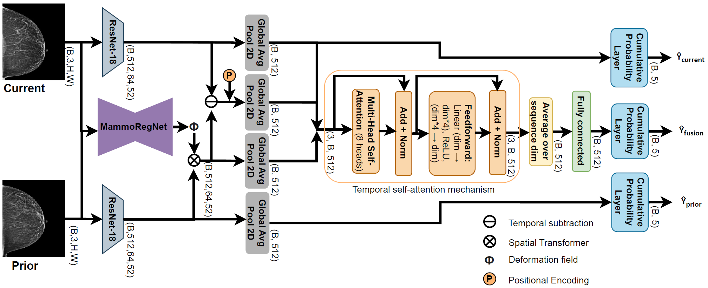

ImgFeatAlign
📌 Overview
ImgFeatAlign is a longitudinal breast cancer risk prediction model that focuses on feature-level temporal alignment between current and prior mammograms.
Instead of aligning images directly, the model leverages a pre-trained registration network (MammoRegNet) to estimate deformation fields and applies them in feature space, enabling more robust comparison of temporal changes.
The model builds on a single-view setting and enhances longitudinal modeling through explicit feature alignment and temporal difference learning.
🧠 Key Idea
ImgFeatAlign is built around three core ideas:
- Feature-level alignment: Instead of warping images, deformation fields from a pretrained deep learning based registration network are applied to feature maps, improving robustness to noise and artifacts
- Explicit temporal comparison: The model computes absolute differences between current and aligned prior features to capture meaningful temporal changes
- Attention-based risk prediction: A dedicated risk model aggregates current, prior, aligned, and difference features along with time gap information
This design allows the model to better capture subtle longitudinal changes that are critical for early cancer risk prediction.
🏗️ Architecture

The model consists of four main stages:
1. Feature Extraction
- Uses a shared encoder (Mirai backbone)
- Converts grayscale mammograms to 3-channel input
- Extracts feature maps for:
- Current image
- Prior image
2. Registration (Image Space)
- A pre-trained MammoRegNet estimates deformation fields between:
- Current image
- Prior image
- The registration network is frozen during training
- The resulting deformation field is resized to match feature resolution
3. Feature Alignment
- A spatial transformer applies the deformation field to prior feature maps
- Produces aligned prior features
- Enables spatially consistent comparison with current features
4. Temporal Difference Learning
- Computes:
- Absolute difference between current and aligned prior features
- Captures localized temporal changes
5. Risk Prediction
- A risk model with attention takes:
- Current features
- Original prior features
- Aligned prior features
- Difference features
- Time gap
- Outputs multiple risk predictions
🔄 Input / Output
Input
The model expects a batch dictionary with:
current_image: Current mammogram[B, 1, H, W]previous_image: Prior mammogram[B, 1, H, W]time_gap: Time between exams[B]target: Risk labels[B, num_years]y_mask: Valid label mask[B, num_years]target_prior: Prior risk labels[B, num_years]y_mask_prior: Prior label mask[B, num_years]
Output
The forward method returns a dictionary containing:
risk_prediction: Dictionary with risk logits for different prediction headsdeformation_field: Estimated deformation field between current and prior imagesaligned_prior_feature: Prior feature maps after spatial alignmentprior_feature: Original prior feature mapscurrent_feature: Current feature mapsdiff_feature: Absolute difference between current and aligned prior features
The risk_prediction dictionary contains:
pred_fused: Fused risk logits[B, num_years]pred_cur: Current-only risk logits[B, num_years]pred_pri: Prior-only risk logits[B, num_years]
These outputs are consumed by two helper methods:
get_risk_heads(outputs, batch)
Uses the outputs fromforwardto construct(logits, target, mask)tuples for each prediction head:fused: Usespred_fusedwithtargetandy_maskcur: Usespred_curwithtargetandy_maskpri: Usespred_priwithtarget_priorandy_mask_prior
This enables multi-task supervision, where the model is trained jointly on fused, current-only, and prior-only predictions.
get_primary_risk_head(outputs)
Uses the outputs fromforwardto return the final prediction for evaluation, defined as:
sigmoid(pred_fused)
This represents the model’s primary risk estimate, derived from the fused longitudinal representation.
🧩 Integration in This Framework
ImgFeatAlign is implemented as a subclass of BaseRiskModel and:
- Uses the shared data interface
- Supports longitudinal single-view inputs
- Produces multiple prediction heads for multi-task learning
- Integrates seamlessly with the training and evaluation pipeline
⚙️ Key Components
- Encoder (Mirai backbone): Extracts deep feature representations
- MammoRegNet: Provides deformation fields for temporal alignment (frozen)
- SpatialTransformerBlock: Applies deformation fields to feature maps
- Temporal self-attention block: Aggregates multi-source features for prediction
📉 Risk Prediction
- Risk is modeled as cumulative probability over time
- Multiple heads allow:
- Fusion-based prediction (primary)
- Current-only supervision
- Prior-only supervision
This multi-head design improves training stability and encourages better temporal feature learning.